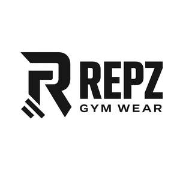
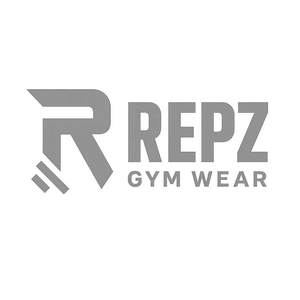

Trade Mark Journal No.2025/019 9 May 2025
UK00004194147 24 April 2025 (25,35)
Mark 1

Mark 2

- Class 25
- Clothing for wear in judo practices; Clothing for wear in wrestling games; Clothing, footwear, headgear; Leather belts [clothing]; Paper hats for use as clothing items; Athletic clothing; Clothing for cycling; Clothing for fishermen; Clothing for horse-riding [other than riding hats]; Clothing for martial arts; Clothing for skiing; Clothing made of leather; Cowls [clothing]; Denims [clothing]; Garments for protecting clothing; Handwarmers [clothing]; Jogging bottoms [clothing]; Kerchiefs [clothing],Athletic clothing, Babies' clothing, Babies' pants [clothing], Baby layettes for clothing, Beach clothes, Belts [clothing], Belts (Money -) [clothing], Boas [clothing], Body linen [garments], Body warmers [clothing], Bottoms [clothing], Braces for clothing [suspenders], Casual clothing Chaps (clothing), Clothes for sports, footwear, headgear, Clothing for children, Clothing for infants, Clothing made of leather, Clothing of imitations of leather, Clothing of leather, Collars [clothing], Combinations [clothing], Corsets [clothing, foundation garments], Corsets [foundation clothing], Cowls [clothing], Denims [clothing], Drawers [clothing], Ear muffs [clothing], Foundation garments, Furs [clothing], Gabardines [clothing], Garments for protecting clothing, Gloves as clothing, Gloves [clothing], Gloves for apparel, Handwarmers [clothing], Headbands [clothing], Headbands for clothing, Hoods [clothing], Jackets [clothing], Jackets (Stuff -) [clothing], Jerseys [clothing], Jogging bottoms [clothing], Kerchiefs [clothing], Knitwear [clothing], Layettes [clothing], Leather belts [clothing], Leather clothing, Leather (Clothing of -), Leather (Clothing of imitations of -), Leather garments, Linen (Body -) [garments], Linings (Ready-made -) [parts of clothing], Maternity clothing, Mitts [clothing], Money belts [clothing], Mufflers [clothing], Muffs [clothing], Nappy pants [clothing], Oilskins [clothing], Pocket squares [clothing], Pockets for clothing, Rainproof clothing, Ready-made clothing, Ready-made linings [parts of clothing], Roll necks [clothing], Short sets [clothing], Shorts [clothing], Shoulder wraps [clothing], Shoulder wraps for clothing, Sleeping garments, Slipovers [clothing], Slips [clothing], Stuff jackets [clothing], Thermally insulated clothing, Three piece suits [clothing], Ties [clothing], Tops [clothing], Under garments, Veils [clothing], Visors [clothing], Waterproof clothing, Wearable garments and clothing, namely, shirts Windbreakers [clothing], Wraps [clothing], Wristbands [clothing],Articles of clothing; lingerie; bras; pants; thongs; stockings; tights; suspender belts; camisoles; dressing gowns; negligees; corsets; night dresses; sleep shirts; sarongs; shoulder wraps; shorts; leggings; footwear; headgear; belts; trousers; shorts; jeans; wristbands; headbands; hats; gloves; jackets; coats; jumpers; shirts; t-shirts; sweaters; vests; trousers; skirts; waistcoats; waterproof clothing; bathing costumes; pyjamas; undergarments; scarves; socks; suits; dresses; blouses; sun visors; anoraks; articles of clothing for leisurewear; articles of clothing for casualwear; articles of clothing for sportswear; articles of outer clothing; articles of weatherproof clothing; blazers; denims; jerseys; knitwear; parkas; sweatshirts; tops; windcheaters; Clothing for wear in judo practices; Clothing for wear in wrestling games; Clothing, footwear, headgear; Leather belts [clothing]; Paper hats for use as clothing items; Athletic clothing; Clothing for cycling; Clothing for fishermen; Clothing for horse-riding [other than riding hats]; Clothing for martial arts; Clothing for skiing; Clothing made of leather; Cowls [clothing]; Denims [clothing]; Garments for protecting clothing; Handwarmers [clothing]; Jogging bottoms [clothing]; Kerchiefs [clothing]; Jeans; Clothing, footwear, headgear. .
- Class 35
- Retail store services, online retail services ,wholesale services all connected with the sale of items of clothing; the bringing together, for the benefit of others a variety of goods, namely jewellery and imitation jewellery, precious stones, catalogues, calendars, printed matter namely pages downloaded from the internet, printed publications, magazines, pamphlets, stationery, posters, transfers, decalcomanias, diaries, pencil cases, pencils, pens, erasers, notebooks, paperweights, staplers, writing paper, envelopes, albums, binders, packaging, files, fountain pens, hat boxes of cardboard, holders for cheque books, mats for beer glasses, coasters of paper, greeting cards, napkins of paper, newsletters, note books, packing paper, writing pads, passport holders, pictures, photographs, stands for pens and pencils, tissues of paper for removing make-up, artists materials, wrapping paper, bags of paper or plastic for packaging, boxes of paper or card or plastic for packaging, leather and imitation leather, bags, belts, cases, trunks and travelling bags, satchels, pouches, rucksacks, shopping bags, beach bags, handbags, briefcases, wallets, key cases, credit card cases, purses, umbrellas, parasols, walking sticks, back packs, hat boxes, animal skins, clothing, lingerie, bras, pants, thongs, stockings, tights, suspender belts, camisoles, dressing gowns, negligees, corsets, night dresses, sleep shirts, sarongs, shoulder wraps, shorts, leggings, footwear, headgear, belts, trousers, shorts, jeans, wristbands, headbands, hats, gloves, jackets, coats, jumpers, shirts, t-shirts, sweaters, vests, trousers, skirts, waistcoats, waterproof clothing, bathing costumes, pyjamas, undergarments, scarves, socks, suits, dresses, blouses, sun visors, anoraks, clothing for leisurewear, clothing for casualwear, clothing for sportswear, outer clothing, weatherproof clothing, blazers, denim clothing, jerseys, knitwear, parkas, sweatshirts, tops, windcheaters, goods of precious metal or coated therewith namely, watches and clocks, wrist watch bands, tie clips, cuff links, key rings of precious metal, watch straps, tie pins, enabling customers to conveniently view and purchase those goods from a clothing accessories catalogue by mail order or by means of telecommunications; retail services connected with the sale of jewellery, precious stones, catalogues, calendars, printed matter namely pages downloaded from the internet, printed publications, magazines, pamphlets, stationery, posters, transfers, decalcomanias, diaries, pencil cases, pencils, pens, erasers, notebooks, paperweights, staplers, writing paper, envelopes, albums, binders, packaging, files, fountain pens, hat boxes of cardboard, holders for cheque books, mats for beer glasses, coasters of paper, greeting cards, napkins of paper, newsletters, note books, packing paper, writing pads, passport holders, pictures, photographs, stands for pens and pencils, tissues of paper for removing make-up, artists materials, wrapping paper, bags of paper or plastic for packaging, boxes of paper or card or plastic for packaging, leather and imitation leather, bags, belts, cases, trunks and travelling bags, satchels, pouches, rucksacks, shopping bags, beach bags, handbags, briefcases, wallets, key cases, credit card cases, purses, umbrellas, parasols, walking sticks, back packs, hat boxes, animal skins, clothing, lingerie, bras, pants, thongs, stockings, tights, suspender belts, camisoles, dressing gowns, negligees, corsets, night dresses, sleep shirts, sarongs, shoulder wraps, shorts, leggings, footwear, headgear, belts, trousers, shorts, jeans, wristbands, headbands, hats, gloves, jackets, coats, jumpers, shirts, t-shirts, sweaters, vests, trousers, skirts, waistcoats, waterproof clothing, bathing costumes, pyjamas, undergarments, scarves, socks, suits, dresses, blouses, sun visors, anoraks, clothing for leisurewear, clothing for casualwear, clothing for sportswear, outer clothing, weatherproof clothing, blazers, denim clothing, jerseys, knitwear, parkas, sweatshirts, tops, windcheaters, goods of precious metal or coated therewith, namely, watches and clocks, wrist watch bands, tie clips, cuff links, key rings of precious metal, watch straps, tie pins; mail order retail services connected with jewellery, precious stones, catalogues, calendars, printed matter namely pages downloaded from the internet, printed publications, magazines, pamphlets, stationery, posters, transfers, decalcomanias, diaries, pencil cases, pencils, pens, erasers, notebooks, paperweights, staplers, writing paper, envelopes, albums, binders, packaging, files, fountain pens, hat boxes of cardboard, holders for cheque books, mats for beer glasses, coasters of paper, greeting cards, napkins of paper, newsletters, note books, packing paper, writing pads, passport holders, pictures, photographs, stands for pens and pencils, tissues of paper for removing make-up, artists materials, wrapping paper, bags of paper or plastic for packaging, boxes of paper or card or plastic for packaging, leather and imitation leather, bags, belts, cases, trunks and travelling bags, satchels, pouches, rucksacks, shopping bags, beach bags, handbags, briefcases, wallets, key cases, credit card cases, purses, umbrellas, parasols, walking sticks, back packs, hat boxes, animal skins, clothing, lingerie, bras, pants, thongs, stockings, tights, suspender belts, camisoles, dressing gowns, negligees, corsets, night dresses, sleep shirts, sarongs, shoulder wraps, shorts, leggings, footwear, headgear, belts, trousers, shorts, jeans, wristbands, headbands, hats, gloves, jackets, coats, jumpers, shirts, t-shirts, sweaters, vests, trousers, skirts, waistcoats, waterproof clothing, bathing costumes, pyjamas, undergarments, scarves, socks, suits, dresses, blouses, sun visors, anoraks, clothing for leisurewear, clothing for casualwear, clothing for sportswear, outer clothing, weatherproof clothing, blazers, denim clothing, jerseys, knitwear, parkas, sweatshirts, tops, windcheaters, goods of precious metal or coated therewith, namely watches and clocks, wrist watch bands, tie clips, cuff links, key rings of precious metal, watch straps, tie pins; electronic shopping retail services connected with the sale of jewellery, precious stones, catalogues, calendars, printed matters namely pages downloaded from the internet, printed publications, magazines, pamphlets, stationery, posters, transfers, decalcomanias, diaries, pencil cases, pencils, pens, erasers, notebooks, paperweights, staplers, writing paper, envelopes, albums, binders, packaging, files, fountain pens, hat boxes of cardboard, holders for cheque books, mats for beer glasses, coasters of paper, greeting cards, napkins of paper, newsletters, note books, packing paper, writing pads, passport holders, pictures, photographs, stands for pens and pencils, tissues of paper for removing make-up, artists materials, wrapping paper, bags of paper or plastic for packaging, boxes of paper or card or plastic for packaging, leather and imitation leather, bags, belts, cases, trunks and travelling bags, satchels, pouches, rucksacks, shopping bags, beach bags, handbags, briefcases, wallets, key cases, credit card cases, purses, umbrellas, parasols, walking sticks, back packs, hat boxes, animal skins, clothing, lingerie, bras, pants, thongs, stockings, tights, suspender belts, camisoles, dressing gowns, negligees, corsets, night dresses, sleep shirts, sarongs, shoulder wraps, shorts, leggings, footwear, headgear, belts, trousers, shorts, jeans, wristbands, headbands, hats, gloves, jackets, coats, jumpers, shirts, t-shirts, sweaters, vests, trousers, skirts, waistcoats, waterproof clothing, bathing costumes, pyjamas, undergarments, scarves, socks, suits, dresses, blouses, sun visors, anoraks, clothing for leisurewear, clothing for casualwear, clothing for sportswear, outer clothing, weatherproof clothing, blazers, denim clothing, jerseys, knitwear, parkas, sweatshirts, tops, windcheaters, goods of precious metal or coated therewith, namely watches and clocks, wrist watch bands, tie clips, cuff links, key rings of precious metal, watch straps, tie pins. .
Rajib Saggar